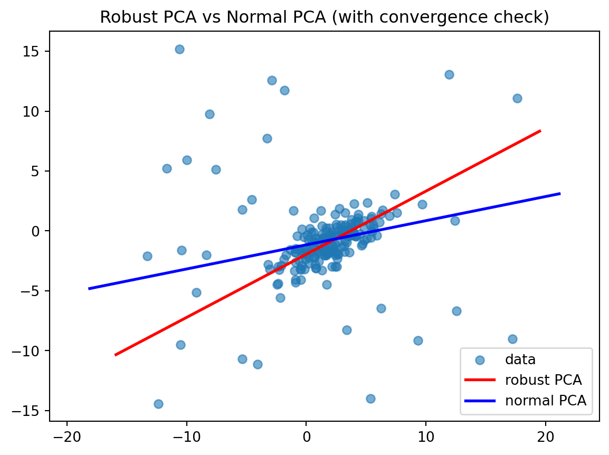

import numpy as np
import matplotlib.pyplot as plt
import numpy as np
def make_cov_matrix(theta_deg=30, lambda1=4.0, lambda2=1.0):
theta = np.radians(theta_deg)
c = np.cos(theta)
s = np.sin(theta)
R = np.array([[c, -s],
[s, c]])
D = np.diag([lambda1, lambda2])
Sigma = R @ D @ R.T # Σ = R D R^T
return Sigma
def generate_2d_gaussian_with_outliers(n=100, outlier_ratio=0.15, random_seed=42):
np.random.seed(random_seed)
mu = np.array([2.0, -1.0])
Sigma = make_cov_matrix(theta_deg=30, lambda1=6.5, lambda2=1.0)
X = np.random.multivariate_normal(mean=mu, cov=Sigma, size=n)
num_outliers = int(n * outlier_ratio)
if num_outliers > 0:
idx_out = np.random.choice(n, size=num_outliers, replace=False)
X[idx_out] += np.random.uniform(-15, 15, size=(num_outliers, 2))
return X
X_data = generate_2d_gaussian_with_outliers(n=200, outlier_ratio=0.15, random_seed=42)
plt.scatter(X_data[:,0], X_data[:,1], alpha=0.6)
plt.title("2D Gaussian (rotated cov) + Outliers")
plt.axis("equal")
plt.show()M推定を用いたPCAについてのメモ
Python
機械学習
はじめに
外乱を含むデータに対して、精度よく統計量を推定する方法にロバスト推定があります。このロバスト推定の代表的な方法の一つに M推定があります。
直近、外乱を含むデータに対して M推定を用いた PCA を適用する機会があったので、このことに関する覚書を残します。
やったこと
- M推定の基本 (ロバスト損失関数やスコア方程式など) を軽く振り返りました。
- PCAをM推定で定式化する手順を、二乗誤差をロバスト損失に置き換えるイメージでまとめました。
- IRLS (Iteratively Reweighted Least Squares) の考え方を使って、ロバスト損失を重み付き最小二乗へ落とし込む流れを示しました。
- ノイズを含む２次元データに対してロバストPCAを実行し、外れ値があっても安定した直線が推定可能なことを確認しました。
ロバストPCAの概略
通常のPCAは、二乗誤差を最小化する形で主成分を求めるため、外乱 (外れ値) に対して頑健ではありません。これは、外れ値が1つでもあると、主成分方向が大きく変化してしまう場合があることを意味します。
一方、ロバストPCAは、ロバスト推定により外れ値があっても推定結果が極端に変化しないように工夫されています。手法の種類は複数ありますが、本記事では M推定 と呼ばれるロバスト推定の代表的枠組みをPCAに適用しました。
M推定の基本
通常の二乗誤差最小化は、以下の損失を最小化する形です。
\[ \sum_i \Bigl(y_i - x_i^\top \beta\Bigr)^2 \]
これは外れ値の二乗誤差が大きく計上されるため、外れ値に敏感になります。
M推定では一般化した損失 \(\rho(\cdot)\) を導入し、これを最小化します。この \(\rho(\cdot)\) にはHuber損失やTukey Biweight損失などが良く用いられます。これらの損失は、一定範囲までは二乗誤差に近い振る舞いをしつつ、大きな残差を持つ点については重みを小さくすることで外れ値の影響を抑えます。
ここで、\(\rho'(r) = \psi(r)\) と定義すると、損失の最小化は以下のように表現できます。
\[ \sum_i \psi\bigl(r_i(\beta)\bigr) \;=\; 0 \]
この時、\(r_i(\beta)\)は目的値とパラメータ \(\beta\) による推定値との残差を表します。 具体的には、回帰の場合は \(y_i - x_i^\top \beta\) が、PCAの場合は \(\|x_i - \mu - W z_i\|\) が該当します。
また、上式は対して \(w_i = \frac{\psi\bigl(r_i(\beta)\bigr)}{(r_i(\beta)}\) を導入すると
\[ \sum_i \frac{\psi\bigl(r_i(\beta)\bigr)}{(r_i(\beta)} r_i(\beta) \;=\; \sum_i w_i r_i(\beta) \;=\; 0 \]
と記述することが可能です。これは、「重み付き最小二乗」の勾配条件と同等であることが解ります。
M推定によるPCAの定式化
通常のPCAでは、以下のように再構成誤差の二乗和を最小化します。
\[ \min_{\mu,\,W,\,\{z_i\}} \quad \sum_{i=1}^N \|\,x_i - \mu - W z_i\|^2 \]
これを、より一般的なロバスト損失に置き換えると、以下のように表現できます。
\[ \min_{\mu,\,W,\,\{z_i\}} \quad \sum_{i=1}^N \rho \Bigl(\|\,x_i - \mu - W z_i\|\Bigr) \]
ロバスト損失 \(\rho\) を用いることで、大きい残差 (外れ値) に対して損失が飽和します。 これにより、結果として外れ値の影響が二乗誤差よりも抑えられます。
今回は、このロバスト損失として Huber 損失 を採用します。Huber 損失の定義は以下の通りです。
\[ \rho_{\delta}(r) \;=\; \begin{cases} \displaystyle \frac{1}{2}\,r^2, & \quad |r| \le \delta,\\[1em] \displaystyle \delta\,|r| \;-\;\frac{1}{2}\,\delta^2, & \quad |r| > \delta. \end{cases} \]
以上のことから、Huber 損失は \(|r|\) が小さい領域では通常の二乗誤差に、\(|r|\) が十分大きい領域では絶対値誤差になります。
IRLS (Iteratively Reweighted Least Squares) によるM推定の実現
ロバスト損失を含む問題は、解を直接求めることが難しい場合が多いです。 今回も解を直接求めることが困難であるため、以下のような 反復法 (IRLS) を使用します。
- 現在の推定値 (例: \(\mu^{(k)}, W^{(k)}, z_i^{(k)}\)) で各サンプルの残差を計算する
- ロバスト損失の微分 \(\psi(r)\) に基づき、重み \(w_i = \dfrac{\psi(r_i)}{\,r_i\,}\) を計算する
- 「重み付き最小二乗問題」として
\[ \sum_{i=1}^N w_i \,\bigl\|\,x_i - \mu - W z_i\bigr\|^2 \] を最小化する - 解が得られたら再び残差を計算し、1. から 3. を繰り返す
以下にHuber損失を採用した際の重み \(w_i\) について具体例を示します。 まず、Huber損失 \(\rho_{\delta}(r)\) の微分 \(\psi_{\delta}(r)\) は以下のように記述されます。
\[ \psi_{\delta}(r) \;=\; \begin{cases} r, & \quad |r| \le \delta,\\[0.5em] \delta \,\mathrm{sign}(r), & \quad |r| > \delta. \end{cases} \]
したがって、重み \(w_i\) は
\[ w_i(r_i) \;=\; \begin{cases} \displaystyle \frac{r_i}{r_i} \;=\; 1, & \quad |r_i|\le \delta,\\[1em] \displaystyle \frac{\delta\,\mathrm{sign}(r_i)}{r_i} \;=\;\frac{\delta}{\,|r_i|\,}, & \quad |r_i| > \delta, \end{cases} \]
となります。これは、残差の絶対値が \(\delta\) 以下なら \(1\) に、\(\delta\) より大きい場合は \(\delta / |r_i|\) になります。これにより、外れ値は重みが極端に小さくなり影響が抑制されます。
Pythonによる実装
ここではノイズを含む2次元データに対して前述のロバストPCAを適用し、主成分を推定します。
データ生成
実験に用いるデータは以下のように生成しました。
ロバストPCA
通常のPCAによる推定結果を初期値とし、IRLSを適用します。
def huber_loss_deriv(r, delta=1.0):
return np.where(np.abs(r) <= delta, r, delta * np.sign(r))
def robust_pca_1d(
X,
max_iter=20,
delta=1.0,
tol=1e-5
):
n, d = X.shape
assert d == 2, "This function is for 2D data only."
# 初期値の推定
mu = np.mean(X, axis=0)
X_centered = X - mu
cov_init = (X_centered.T @ X_centered) / n
eigvals, eigvecs = np.linalg.eig(cov_init)
v = eigvecs[:, np.argmax(eigvals)]
v = v / np.linalg.norm(v)
for iter_id in range(max_iter):
# (1) 残差: ri = ||(I - v v^T)(x_i - mu)||
r_list = []
for i in range(n):
diff = X[i] - mu
orth = diff - (diff @ v)*v
r_list.append(np.linalg.norm(orth))
r_arr = np.array(r_list)
# (2) Huber損失勾配 ψ(r_i) で重みを計算
psi_r = huber_loss_deriv(r_arr, delta=delta)
w = psi_r / (r_arr + 1e-9)
# (3) 重み付き平均 mu_new
W_sum = np.sum(w)
mu_new = (w.reshape(-1,1) * X).sum(axis=0) / (W_sum + 1e-9)
# (4) 重み付き共分散行列を作って最大固有値ベクトルを得る
X_shifted = X - mu_new
sqrt_w = np.sqrt(w)
X_w = X_shifted * sqrt_w.reshape(-1,1)
S = (X_w.T @ X_w) / (np.sum(w) + 1e-9)
eigvals_w, eigvecs_w = np.linalg.eig(S)
v_new = eigvecs_w[:, np.argmax(eigvals_w)]
v_new = v_new / np.linalg.norm(v_new)
# --- 収束判定 ---
delta_mu = np.linalg.norm(mu_new - mu)
delta_v = np.linalg.norm(v_new - v)
mu = mu_new
v = v_new
if delta_mu < tol and delta_v < tol:
break
return mu, v
def normal_pca_1d(
X,
max_iter=20,
delta=1.0,
tol=1e-5
):
mu = X_data.mean(axis=0)
Xc = X_data - mu
cov_ = (Xc.T @ Xc) / Xc.shape[0]
eigvals_, eigvecs_ = np.linalg.eig(cov_)
v = eigvecs_[:, np.argmax(eigvals_)]
v = v / np.linalg.norm(v)
return mu, v実行結果確認
サンプル数を \(200\)、その内 \(15\%\) を外れ値としました。以下の結果から、ロバストPCAの方が良い結果を推定できていることが確認できます。
X_data = generate_2d_gaussian_with_outliers(n=200, outlier_ratio=0.15, random_seed=42)
mu_robust, v_robust = robust_pca_1d(X_data, max_iter=50, delta=2.0, tol=1e-6)
mu_normal, v_normal = normal_pca_1d(X_data)
print("Robust PCA:")
print(" mu =", mu_robust)
print(" v =", v_robust)
print("Normal PCA:")
print(" mu =", mu_normal)
print(" v =", v_normal)
plt.scatter(X_data[:,0], X_data[:,1], alpha=0.6, label="data")
def plot_vector(mu, v, color, label):
t = np.linspace(-20, 20, 200)
line = mu[None,:] + t[:,None]*v[None,:]
plt.plot(line[:,0], line[:,1], color=color, label=label, linewidth=2)
plot_vector(mu_robust, v_robust, "red", "robust PCA")
plot_vector(mu_normal, v_normal, "blue", "normal PCA")
plt.axis("equal")
plt.legend()
plt.title("Robust PCA vs Normal PCA (with convergence check)")
plt.show()Robust PCA:
mu = [ 1.79561083 -1.00272666]
v = [0.88451553 0.46651075]
Normal PCA:
mu = [ 1.51322481 -0.85757259]
v = [0.9802391 0.19781633]
参考
[1]
藤澤洋徳. 2017. ロバスト統計：外れ値への対処の仕方 ＩＳＭシリーズ：進化する統計数理. 近代科学社.